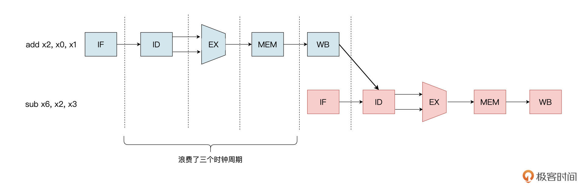
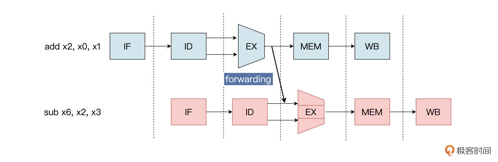
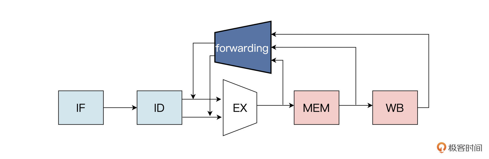
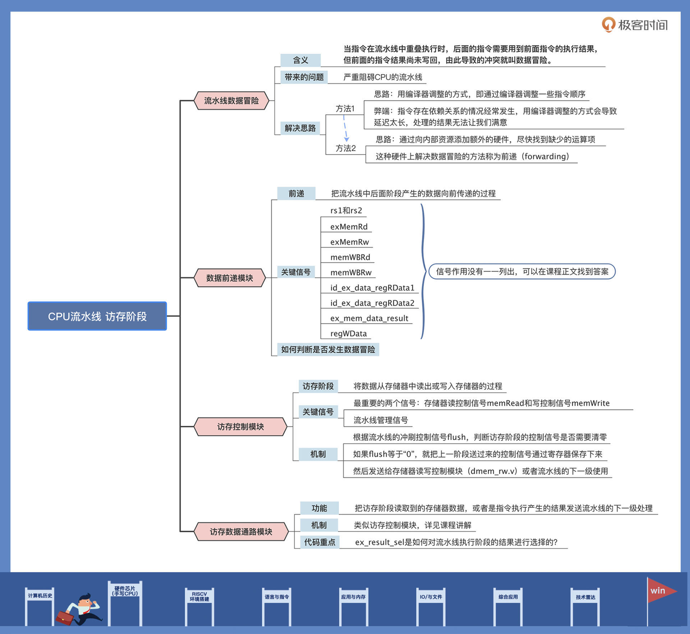

- 00 开篇词 练好基本功，优秀工程师成长第一步.md.html
- 01 CISC & RISC：从何而来，何至于此.md.html
- 02 RISC特性与发展：RISC-V凭什么成为“半导体行业的Linux”？.md.html
- 03 硬件语言筑基（一）：从硬件语言开启手写CPU之旅.md.html
- 04 硬件语言筑基（二）_ 代码是怎么生成具体电路的？.md.html
- 05 指令架构：RISC-V在CPU设计上到底有哪些优势？.md.html
- 06 手写CPU（一）：迷你CPU架构设计与取指令实现.md.html
- 07 手写CPU（二）：如何实现指令译码模块？.md.html
- 08 手写CPU（三）：如何实现指令执行模块？.md.html
- 09 手写CPU（四）：如何实现CPU流水线的访存阶段？.md.html
- 10 手写CPU（五）：CPU流水线的写回模块如何实现？.md.html
- 11 手写CPU（六）：如何让我们的CPU跑起来？.md.html
- 12 QEMU：支持RISC-V的QEMU如何构建？.md.html
- 13 小试牛刀：跑通RISC-V平台的Hello World程序.md.html
- 14 走进C语言：高级语言怎样抽象执行逻辑？.md.html
- 15 C与汇编：揭秘C语言编译器的“搬砖”日常.md.html
- 16 RISC-V指令精讲（一）：算术指令实现与调试.md.html
- 17 RISC-V指令精讲（二）：算术指令实现与调试.md.html
- 18 RISC-V指令精讲（三）：跳转指令实现与调试.md.html
- 19 RISC-V指令精讲（四）：跳转指令实现与调试.md.html
- 20 RISC-V指令精讲（五）：原子指令实现与调试.md.html
- 21 RISC-V指令精讲（六）：加载指令实现与调试.md.html
- 22 RISC-V指令精讲（七）：访存指令实现与调试.md.html
- 23 内存地址空间：程序中地址的三种产生方式.md.html
- 24 虚实结合：虚拟内存和物理内存.md.html
- 25 堆&栈：堆与栈的区别和应用.md.html
- 26 延迟分配：提高内存利用率的三种机制.md.html
- 27 应用内存管理：Linux的应用与内存管理.md.html
- 28 进程调度：应用为什么能并行执行？.md.html
- 29 应用间通信（一）：详解Linux进程IPC.md.html
- 30 应用间通信（二）：详解Linux进程IPC.md.html
- 31 外设通信：IO Cache与IO调度.md.html
- 32 IO管理：Linux如何管理多个外设？.md.html
- 33 lotop与lostat命令：聊聊命令背后的故事与工作原理.md.html
- 34 文件仓库：初识文件与文件系统.md.html
- 35 Linux文件系统（一）：Linux如何存放文件？.md.html
- 36 Linux文件系统（二）：Linux如何存放文件？.md.html
- 37 浏览器原理（一）：浏览器为什么要用多进程模型？.md.html
- 38 浏览器原理（二）：浏览器进程通信与网络渲染详解.md.html
- 39 源码解读：V8 执行 JS 代码的全过程.md.html
- 40 内功心法（一）：内核和后端通用的设计思想有哪些？.md.html
- 41 内功心法（二）：内核和后端通用的设计思想有哪些？.md.html
- 42 性能调优：性能调优工具eBPF和调优方法.md.html
- 先睹为快：迷你CPU项目效果演示.md.html
- 加餐01 云计算基础：自己动手搭建一款IAAS虚拟化平台.md.html
- 加餐02 学习攻略（一）：大数据&云计算，究竟怎么学？.md.html
- 加餐03 学习攻略（二）：大数据&云计算，究竟怎么学？.md.html
- 加餐04 谈谈容器云与和CaaS平台.md.html
- 加餐05 分布式微服务与智能SaaS.md.html
- 国庆策划01 知识挑战赛：检验一下学习成果吧！.md.html
- 国庆策划02 来自课代表的学习锦囊.md.html
- 国庆策划03 揭秘代码优化操作和栈保护机制.md.html
- 温故知新 思考题参考答案（一）.md.html
- 用户故事 我是怎样学习Verilog的？.md.html
- 结束语 心若有所向往，何惧道阻且长.md.html
- 捐赠
09 手写CPU（四）：如何实现CPU流水线的访存阶段？
你好，我是LMOS。
先简单回顾一下上一节课，我们设计了MiniCPU流水线的执行相关模块。其中包括执行控制模块、通用寄存器模块，以及可以进行加减法运算、大小比较、移位操作的ALU模块。
指令执行之后就到了流水线的下一级——访存。这节课我们就重点聊聊怎么设计实现访存的相关模块。在你的设想里，访存模块必要的组成部分有哪些呢？
如果你的第一反应是访存控制模块，我只能说你只答对了一部分。访存控制模块虽然是流水线的主线，但你可能忽略了流水线中的数据相关性问题。因此，今天我们先想办法解决流水线的数据冒险问题，然后再完成流水线访存阶段相关模块的设计。
这节课的代码你可以从这里获取。
流水线数据冒险
在开始设计访存模块之前，我们得先解决一个问题，即流水线的数据冒险。
在CPU流水线里，执行不同的指令时会发生这样的情况：一条指令B，它依赖于前面还在流水线中的指令A的执行结果。当指令B到达执行阶段时，因为指令A还在访存阶段，所以这时候就无法提供指令B执行所需要的数据。这就导致指令B无法在预期的时钟周期内执行。
当指令在流水线中重叠执行时，后面的指令需要用到前面的指令的执行结果，而前面的指令结果尚未写回，由此导致的冲突就叫数据冒险。
我再举个更具体些的例子。比如，有一条减法指令，它需要用到前面一条加法指令的运算结果作为被减数：
add x2,x0,x1
sub x6,x2,x3
结合下面的示意图，我们可以看到，在不做任何干预的情况下，sub依赖于add的执行结果，这导致sub指令要等到add指令走到流水线的第五个阶段，把结果写回之后才能执行，这就浪费了三个时钟周期。

这种数据冒险将会严重地阻碍CPU的流水线，设置流水线目的就是为了提升效率，让某个时间点上有多条指令可以同时执行，这种让指令“干等”的状态显然不是最佳选项。那我们怎么解决这样的问题呢？方法其实不止一种，让我带你分析分析。
结合前的例子，我们最直接的处理办法就是通过编译器调整一些指令顺序。不过指令存在依赖关系的情况经常发生，用编译器调整的方式会导致延迟太长，处理的结果无法让我们满意。
别灰心，我们再另寻出路。把前面的加法指令add放到流水线中，通过观察整个运算过程，我们不难发现，其实add加法运算的结果，经过流水线的执行阶段（也就是第三个模块EX）之后就已经出来了，只是还没把结果写回到x2寄存器而已。

所以，另一种解决办法也就有了头绪，能不能通过向内部资源添加额外的硬件，来尽快找到缺少的运算项呢？
这当然可以。对于上述的指令序列，一旦ALU计算出加法指令的结果，就可以将其作为减法指令执行的数据输入，不需要等待指令完成，就可以解决数据冒险的问题。
如上图所示，将add指令执行阶段运算的结果x2中的值，直接传递给sub指令作为执行阶段的输入，替换sub指令在译码阶段读出的寄存器x2的值。这种硬件上解决数据冒险的方法称为前递（forwarding）。
好，思路既然理清楚了，我们就把它落地到实际设计里。
数据前递模块的设计
通过上节课执行模块的设计，我们知道了ALU的逻辑运算需要两个操作数，一个来自于通用寄存器，另一个来自于通用寄存器或者指令自带的立即数。
但是当需要读取的通用寄存器的值，依赖于前面第一条或者第二条指令的运算结果时，就出现了刚才我们提到的数据冒险问题。为了解决这个问题，就需要我们专门设计一个数据前递模块（forwarding），它在流水线中的位置如下图所示：

所谓前递，顾名思义，就是把流水线中后面阶段产生的数据向前传递的过程。
正如上图中的forwarding模块，可以看到它的数据来自于流水线中的执行模块EX、访存模块MEM、写回模块WB的输出，经过forwarding模块处理后，把数据传递到执行模块的输入。
然后，流水线根据当前指令的译码信号，选择读取通用寄存器的数据作为执行模块的操作数，或者选择来自前递模块的数据作为执行模块的操作数。
那么具体是如何选择前递数据作为执行模块的操作数呢？让我们结合下面forwarding模块的代码来寻找答案：
module forwarding (
input [4:0] rs1,
input [4:0] rs2,
input [4:0] exMemRd,
input exMemRw,
input [4:0] memWBRd,
input memWBRw,
input mem_wb_ctrl_data_toReg,
input [31:0] mem_wb_readData,
input [31:0] mem_wb_data_result,
input [31:0] id_ex_data_regRData1,
input [31:0] id_ex_data_regRData2,
input [31:0] ex_mem_data_result,
output [31:0] forward_rs1_data,
output [31:0] forward_rs2_data
);
//检查是否发生数据冒险
wire [1:0] forward_rs1_sel = (exMemRw & (rs1 == exMemRd) & (exMemRd != 5'b0)) ? 2'b01
:(memWBRw & (rs1 == memWBRd) & (memWBRd != 5'b0)) ? 2'b10
: 2'b00;
wire [1:0] forward_rs2_sel = (exMemRw & (rs2 == exMemRd) & (exMemRd != 5'b0)) ? 2'b01
:(memWBRw & (rs2 == memWBRd) & (memWBRd != 5'b0)) ? 2'b10
: 2'b00;
wire [31:0] regWData = mem_wb_ctrl_data_toReg ? mem_wb_readData : mem_wb_data_result;
//根据数据冒险的类型选择前递的数据
assign forward_rs1_data = (forward_rs1_sel == 2'b00) ? id_ex_data_regRData1 :
(forward_rs1_sel == 2'b01) ? ex_mem_data_result :
(forward_rs1_sel == 2'b10) ? regWData : 32'h0;
assign forward_rs2_data = (forward_rs2_sel == 2'b00) ? id_ex_data_regRData2 :
(forward_rs2_sel == 2'b01) ? ex_mem_data_result :
(forward_rs2_sel == 2'b10) ? regWData : 32'h0;
endmodule
我们分别看看代码中的各种信号。前递模块输入的端口信号rs1和rs2，来自于指令译码后得到的两个通用寄存器索引。exMemRd信号是来自访存模块的对通用寄存器的访问地址。exMemRw是流水线访存阶段对通用寄存器的写使能控制信号。memWBRd 和 memWBRw分别是写回模块对通用寄存器的地址和写使能控制信号。
利用这些信号就可以判断是否发生数据冒险，我们结合下面这段代码继续分析分析：
//检查是否发生数据冒险
wire [1:0] forward_rs1_sel = (exMemRw & (rs1 == exMemRd) & (exMemRd != 5'b0)) ? 2'b01
:(memWBRw & (rs1 == memWBRd) & (memWBRd != 5'b0)) ? 2'b10
: 2'b00;
wire [1:0] forward_rs2_sel = (exMemRw & (rs2 == exMemRd) & (exMemRd != 5'b0)) ? 2'b01
:(memWBRw & (rs2 == memWBRd) & (memWBRd != 5'b0)) ? 2'b10
: 2'b00;
当需要读取的通用寄存器的地址等于访存，或者写回阶段要访问通用寄存器地址时（也就是rs1 == exMemRd和rs1 == memWBRd），就判断为将要发生数据冒险。
当然，由于通用寄存器中的零寄存器的值永远为“0”，所以不会发生数据冒险，需要排除掉这种特殊情况（也就是exMemRd != 5’b0 和 memWBRd != 5’b0）。根据这样的判断结果，就会产生前递数据的两个选择信号forward_rs1_sel和forward_rs2_sel。
发生数据冒险的情况就是这样，那不发生数据冒险又是什么情况呢？下面是选择前递的数据对应的代码段，我们结合这段代码继续分析。
//根据数据冒险的类型选择前递的数据
assign forward_rs1_data = (forward_rs1_sel == 2'b00) ? id_ex_data_regRData1 :
(forward_rs1_sel == 2'b01) ? ex_mem_data_result :
(forward_rs1_sel == 2'b10) ? regWData : 32'h0;
assign forward_rs2_data = (forward_rs2_sel == 2'b00) ? id_ex_data_regRData2 :
(forward_rs2_sel == 2'b01) ? ex_mem_data_result :
(forward_rs2_sel == 2'b10) ? regWData : 32'h0;
我们先把目光聚焦到id_ex_data_regRData1和id_ex_data_regRData2这两个信号上。它们来自于指令译码之后读出通用寄存器的两个操作数，这是流水线不发生数据冒险时，流水线正常选择的数据通路。
而ex_mem_data_result 信号是访存阶段需要写到通用寄存器的数据，regWData是回写阶段需要更新到通用寄存器的数据。这样，通过判断将要发生数据冒险的位置，前递模块选择性地把处于流水线中的数据前递，就可以巧妙地解决流水线中的数据冒险问题了。
访存控制模块设计
好了，解决了流水线的数据冒险问题，让我们回到流水线设计的主线来，继续完成流水线的第四级——访存相关模块的设计。
在[第六节课]讲CPU流水线的时候我们提到过，流水线中一条指令的生命周期分为五个阶段。流水线的访存阶段就是指，将数据从存储器中读出或写入存储器的过程。这个阶段会出现由 LOAD / STORE 指令产生的内存访问。
因为访存阶段的功能就是对存储器读写，所以访存控制信号中，最重要的两个信号就是存储器读控制信号memRead 和写控制信号memWrite。当然，访存的控制信号通路也会受流水线冲刷等流水线管理信号的控制，具体的代码如下：
module ex_mem_ctrl(
input clk,
input reset,
input in_mem_ctrl_memRead, //memory读控制信号
input in_mem_ctrl_memWrite, //memory写控制信号
input [1:0] in_mem_ctrl_maskMode, //mask模式选择
input in_mem_ctrl_sext, //符合扩展
input in_wb_ctrl_toReg, //写回寄存器的数据选择，“1”时为mem读取的数据
input in_wb_ctrl_regWrite, //寄存器写控制信号
input flush, //流水线数据冲刷信号
output out_mem_ctrl_memRead,
output out_mem_ctrl_memWrite,
output [1:0] out_mem_ctrl_maskMode,
output out_mem_ctrl_sext,
output out_wb_ctrl_toReg,
output out_wb_ctrl_regWrite
);
reg reg_mem_ctrl_memRead;
reg reg_mem_ctrl_memWrite;
reg [1:0] reg_mem_ctrl_maskMode;
reg reg_mem_ctrl_sext;
reg reg_wb_ctrl_toReg;
reg reg_wb_ctrl_regWrite;
assign out_mem_ctrl_memRead = reg_mem_ctrl_memRead;
assign out_mem_ctrl_memWrite = reg_mem_ctrl_memWrite;
assign out_mem_ctrl_maskMode = reg_mem_ctrl_maskMode;
assign out_mem_ctrl_sext = reg_mem_ctrl_sext;
assign out_wb_ctrl_toReg = reg_wb_ctrl_toReg;
assign out_wb_ctrl_regWrite = reg_wb_ctrl_regWrite;
always @(posedge clk or posedge reset) begin
if (reset) begin
reg_mem_ctrl_memRead <= 1'h0;
end else if (flush) begin
reg_mem_ctrl_memRead <= 1'h0;
end else begin
reg_mem_ctrl_memRead <= in_mem_ctrl_memRead;
end
end
always @(posedge clk or posedge reset) begin
if (reset) begin
reg_mem_ctrl_memWrite <= 1'h0;
end else if (flush) begin
reg_mem_ctrl_memWrite <= 1'h0;
end else begin
reg_mem_ctrl_memWrite <= in_mem_ctrl_memWrite;
end
end
………… //由于代码较长，结构相似，这里省略了一部分，完整代码你可以从Gitee上获取
endmodule
虽然代码有几十行，但过程还是很容易理解的。首先要根据流水线的冲刷控制信号flush，判断访存阶段的控制信号是否需要清零。
如果flush等于“0”，就把上一阶段送过来的控制信号（比如存储器读控制信号memRead、存储器写控制信号memWrite……等），通过寄存器保存下来，然后发送给存储器读写控制模块（dmem_rw.v）或者流水线的下一级使用。
访存数据通路模块设计
接下来，我们继续完成访存数据通路模块的设计。访存数据通路就是把访存阶段读取到的存储器数据，或者是指令执行产生的结果发送流水线的下一级处理。
由于下一级也就是流水线的最后一级——写回，所以访存的数据通路主要包括要写回的通用寄存器地址regWAddr、访问存储器读取的数据regRData2、指令运算的结果result等。
访存的数据通路也会受流水线冲刷等流水线管理信号的控制，具体代码如下：
module ex_mem(
input clk,
input reset,
input [4:0] in_regWAddr, //写回寄存器的地址
input [31:0] in_regRData2, //读存储器的数据
input [1:0] ex_result_sel, //执行结果选择
input [31:0] id_ex_data_imm, //指令立即数
input [31:0] alu_result, //ALU运算结果
input [31:0] in_pc, //当前PC值
input flush, //流水线数据冲刷控制信号
output [4:0] data_regWAddr,
output [31:0] data_regRData2,
output [31:0] data_result,
output [31:0] data_pc
);
reg [4:0] reg_regWAddr;
reg [31:0] reg_regRData2;
reg [31:0] reg_result;
reg [31:0] reg_pc;
wire [31:0] resulet_w = (ex_result_sel == 2'h0) ? alu_result :
(ex_result_sel == 2'h1) ? id_ex_data_imm :
(ex_result_sel == 2'h2) ? (in_pc +32'h4) : 32'h0;
assign data_regWAddr = reg_regWAddr;
assign data_regRData2 = reg_regRData2;
assign data_result = reg_result;
assign data_pc = reg_pc;
always @(posedge clk or posedge reset) begin
if (reset) begin
reg_regWAddr <= 5'h0;
end else if (flush) begin
reg_regWAddr <= 5'h0;
end else begin
reg_regWAddr <= in_regWAddr;
end
end
always @(posedge clk or posedge reset) begin
if (reset) begin
reg_regRData2 <= 32'h0;
end else if (flush) begin
reg_regRData2 <= 32'h0;
end else begin
reg_regRData2 <= in_regRData2;
end
end
always @(posedge clk or posedge reset) begin
if (reset) begin
reg_result <= 32'h0;
end else if (flush) begin
reg_result <= 32'h0;
end else begin
reg_result <= resulet_w;
end
end
always @(posedge clk or posedge reset) begin
if (reset) begin
reg_pc <= 32'h0;
end else if (flush) begin
reg_pc <= 32'h0;
end else begin
reg_pc <= in_pc;
end
end
endmodule
和上面的访存控制模块类似，访存数据通路模块也是根据流水线的冲刷控制信号flush，判断访存阶段的数据是否需要清零。如果不需要清零，就把上一阶段送过来的数据通过寄存器保存下来。
对于代码的第21到第23行代码，我为你单独解释一下。
ex_result_sel就是对流水线执行阶段的结果进行选择。当（ex_result_sel == 2’h0）时，就选择ALU的运算结果；当（ex_result_sel == 2’h1）时，就会选择指令解码得到的立即数（其实就是对应LUI指令）；当（ex_result_sel == 2’h2）时，选择PC加4的值，也就是下一个PC的值。
wire [31:0] resulet_w = (ex_result_sel == 2'h0) ? alu_result :
(ex_result_sel == 2'h1) ? id_ex_data_imm :
(ex_result_sel == 2'h2) ? (in_pc +32'h4) : 32'h0;
重点回顾
这节课的内容到这里就告一段落了，我给你做个总结吧。
今天我们在设计访存模块之前，先探讨了流水线中的数据冒险问题。在执行指令时，如果发生了数据冒险，就可能使流水线停顿，等待前面的指令执行完成后才能继续执行后续的指令，严重影响了指令在CPU流水线中并行执行。因此，我们设计了数据前递模块来解决数据冒险的问题。
但是，添加前递模块并不能避免所有的流水线停顿。比如，当一条读存储器指令（LOAD）之后紧跟一条需要使用其结果的R型指令时，就算使用前递也需要流水线停顿。因为读存储器的数据必须要在访存之后才能用，但load指令正在访存时，后一条指令已经在执行。所以，在这种情况下，流水线必须停顿，通常的说法是在两条指令之间插入气泡。
最后，我们根据流水线的控制信号，完成了访存控制信号通路和访存数据通路的模块设计。这节课的要点你可以参考下面的导图。

通过课程的讲解，CPU流水线中访存阶段的设计实现的思路，相信你已经心中有数了，别忘了课后结合配套代码再找找“手感”。下节课，我们将会介绍流水线的最后一级——写回模块的设计，敬请期待。
思考题
除了数据冒险，我们的CPU流水线是否还存在其它的冲突问题，你想到解决方法了么？
欢迎你在留言区和我交流，踊跃提问或者记录笔记对我们加深理解有很大的帮助。如果你觉得这节课还不错，别忘了分享给更多朋友，和他一起手写CPU。
© 2019 - 2023 Liangliang Lee. Powered by gin and hexo-theme-book.